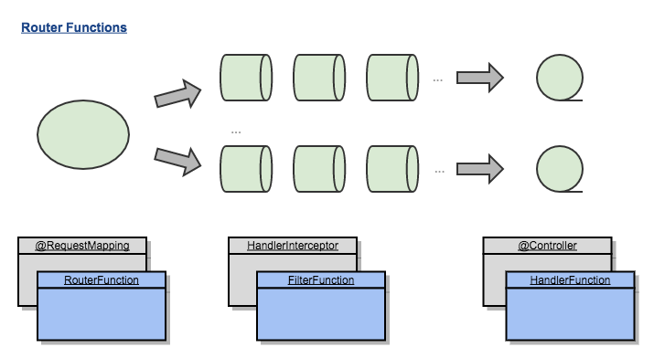

<!DOCTYPE HTML>
<html>
<head><meta name="generator" content="Hexo 3.9.0">
  <meta charset="utf-8">
  <meta http-equiv="X-UA-Compatible" content="IE=edge">
  <meta name="apple-mobile-web-app-capable" content="yes">
  <meta name="apple-mobile-web-app-status-bar-style" content="black">
  <meta name="google-site-verification" content>
  
  <title>【Spring 5】响应式Web框架实战（下）</title>
  <meta name="author" content="Emac">
   <meta name="description" content="引子：被誉为“中国大数据第一人”的涂子沛先生在其成名作《数据之巅》里提到，摩尔定律、社交媒体、数据挖掘是大数据的三大成因。IBM的研究称，整个人类文明所获得的全部数据中，有90%是过去两年内产生的。在此背景下，包括NoSQL，Hadoop, Spark, Storm, Kylin在内的大批新技术应运">
  

  <meta property="og:title" content="【Spring 5】响应式Web框架实战（下）">
  <meta name="viewport" content="width=device-width, initial-scale=1, maximum-scale=1">
  <meta property="og:site_name" content="Emac">
 <meta property="og:image" content="undefined">
  
  <link href="/apple-touch-icon-precomposed.png" sizes="180x180" rel="apple-touch-icon-precomposed">
  <link rel="alternate" href="/atom.xml" title="Emac" type="application/atom+xml">
  <link rel="stylesheet" href="//cdn.bootcss.com/bootstrap/3.3.6/css/bootstrap.min.css">
  <link rel="stylesheet" href="//cdn.bootcss.com/font-awesome/4.5.0/css/font-awesome.min.css">
  <link rel="stylesheet" href="/css/m.min.css">
  <link rel="icon" type="image/x-icon" href="/favicon.ico">
</head>
</html>
<body>
  <div id='wx_pic' style='display:none;'></div>
  <div id="main">
    <div class="behind">
      <div class="back">
        <a href="/" class="black-color"><i class="fa fa-times" aria-hidden="true"></i></a>
      </div>
      <div class="description">
        &nbsp;拾贝
      </div>
    </div>
    <div class="container">
      

  <article class="standard post">
    <div class="title">
      
  
    <h1 class="page-title center">
        【Spring 5】响应式Web框架实战（下）
    </h1>
  


    </div>
    <div class="meta center">
      
<time datetime="2017-07-17T16:00:00.000Z">
  <i class="fa fa-calendar"></i>&nbsp;
  2017-07-18
</time>


    
    &nbsp;
    <i class="fa fa-tag"></i>&nbsp;
    <a href="/categories/backend/">backend</a>


    
    &nbsp;
    <i class="fa fa-tag"></i>&nbsp;
    <a href="/tags/原创/">原创</a>·<a href="/tags/Spring/">Spring</a>·<a href="/tags/Reactive/">Reactive</a>


    </div>
    <hr>
    <div class="picture-container">
      
    </div>
    <blockquote>
<p>引子：被誉为“中国大数据第一人”的涂子沛先生在其成名作《数据之巅》里提到，摩尔定律、社交媒体、数据挖掘是大数据的三大成因。IBM的研究称，整个人类文明所获得的全部数据中，有90%是过去两年内产生的。在此背景下，包括NoSQL，Hadoop, Spark, Storm, Kylin在内的大批新技术应运而生。其中以<a href="https://github.com/ReactiveX/RxJava" target="_blank" rel="noopener">RxJava</a>和<a href="http://projectreactor.io/" target="_blank" rel="noopener">Reactor</a>为代表的响应式（Reactive）编程技术针对的就是经典的大数据4V定义（Volume，Variety，Velocity，Value）中的Velocity，即高并发问题，而在即将发布的Spring 5中，也引入了响应式编程的支持。在接下来的几周，我会围绕响应式编程分三期与你分享我的一些学习心得。本篇是第三篇（下），通过一个简单的Spring 5示例应用，探一探即将于下月底发布的Spring 5的究竟。</p>
<p>前情概要：</p>
<ul>
<li><a href="http://emacoo.cn/backend/spring5-overview/">【Spring 5】响应式Web框架前瞻</a></li>
<li><a href="http://emacoo.cn/backend/reactive-overview/">响应式编程总览</a></li>
<li><a href="http://emacoo.cn/backend/spring5-reactive-tutorial/">【Spring 5】响应式Web框架实战（上）</a></li>
</ul>
</blockquote>
<h2 id="1-回顾"><a href="#1-回顾" class="headerlink" title="1 回顾"></a>1 回顾</h2><p><a href="http://emacoo.cn/backend/spring5-reactive-tutorial/">上篇</a>介绍了如何使用Spring MVC注解实现一个响应式Web应用（以下简称RP应用），本篇接着介绍另一种实现方式——Router Functions。</p>
<h2 id="2-实战"><a href="#2-实战" class="headerlink" title="2 实战"></a>2 实战</h2><h3 id="2-1-Router-Functions"><a href="#2-1-Router-Functions" class="headerlink" title="2.1 Router Functions"></a>2.1 Router Functions</h3><p></p>
<p>Router Functions是Spring 5新引入的一套Reactive风格（基于Flux和Mono）的函数式接口，主要包括<code>RouterFunction</code>，<code>HandlerFunction</code>和<code>HandlerFilterFunction</code>，分别对应Spring MVC中的<code>@RequestMapping</code>，<code>@Controller</code>和<code>HandlerInterceptor</code>（或者Servlet规范中的<code>Filter</code>）。</p>
<p>和Router Functions搭配使用的是两个新的请求/响应模型，<code>ServerRequest</code>和<code>ServerResponse</code>，这两个模型同样提供了Reactive风格的接口。</p>
<h3 id="2-2-示例代码"><a href="#2-2-示例代码" class="headerlink" title="2.2 示例代码"></a>2.2 示例代码</h3><p>下面接着看我GitHub上的<a href="https://github.com/emac/spring5-features-demo" target="_blank" rel="noopener">示例工程</a>里的例子。</p>
<h4 id="2-2-1-自定义RouterFunction和HandlerFilterFunction"><a href="#2-2-1-自定义RouterFunction和HandlerFilterFunction" class="headerlink" title="2.2.1 自定义RouterFunction和HandlerFilterFunction"></a>2.2.1 自定义RouterFunction和HandlerFilterFunction</h4><figure class="highlight java"><table><tr><td class="gutter"><pre><span class="line">1</span><br><span class="line">2</span><br><span class="line">3</span><br><span class="line">4</span><br><span class="line">5</span><br><span class="line">6</span><br><span class="line">7</span><br><span class="line">8</span><br><span class="line">9</span><br><span class="line">10</span><br><span class="line">11</span><br><span class="line">12</span><br><span class="line">13</span><br><span class="line">14</span><br><span class="line">15</span><br><span class="line">16</span><br><span class="line">17</span><br><span class="line">18</span><br><span class="line">19</span><br><span class="line">20</span><br><span class="line">21</span><br><span class="line">22</span><br><span class="line">23</span><br><span class="line">24</span><br><span class="line">25</span><br><span class="line">26</span><br><span class="line">27</span><br><span class="line">28</span><br><span class="line">29</span><br><span class="line">30</span><br><span class="line">31</span><br><span class="line">32</span><br><span class="line">33</span><br><span class="line">34</span><br><span class="line">35</span><br><span class="line">36</span><br><span class="line">37</span><br><span class="line">38</span><br><span class="line">39</span><br></pre></td><td class="code"><pre><span class="line"><span class="meta">@Configuration</span></span><br><span class="line"><span class="keyword">public</span> <span class="class"><span class="keyword">class</span> <span class="title">RestaurantServer</span> <span class="keyword">implements</span> <span class="title">CommandLineRunner</span> </span>&#123;</span><br><span class="line"></span><br><span class="line">    <span class="meta">@Autowired</span></span><br><span class="line">    <span class="keyword">private</span> RestaurantHandler restaurantHandler;</span><br><span class="line"></span><br><span class="line">    <span class="comment">/**</span></span><br><span class="line"><span class="comment">     * 注册自定义RouterFunction</span></span><br><span class="line"><span class="comment">     */</span></span><br><span class="line">    <span class="meta">@Bean</span></span><br><span class="line">    <span class="function"><span class="keyword">public</span> RouterFunction&lt;ServerResponse&gt; <span class="title">restaurantRouter</span><span class="params">()</span> </span>&#123;</span><br><span class="line">        RouterFunction&lt;ServerResponse&gt; router = route(GET(<span class="string">"/reactive/restaurants"</span>).and(accept(APPLICATION_JSON_UTF8)), restaurantHandler::findAll)</span><br><span class="line">                .andRoute(GET(<span class="string">"/reactive/delay/restaurants"</span>).and(accept(APPLICATION_JSON_UTF8)), restaurantHandler::findAllDelay)</span><br><span class="line">                .andRoute(GET(<span class="string">"/reactive/restaurants/&#123;id&#125;"</span>).and(accept(APPLICATION_JSON_UTF8)), restaurantHandler::get)</span><br><span class="line">                .andRoute(POST(<span class="string">"/reactive/restaurants"</span>).and(accept(APPLICATION_JSON_UTF8)).and(contentType(APPLICATION_JSON_UTF8)), restaurantHandler::create)</span><br><span class="line">                .andRoute(DELETE(<span class="string">"/reactive/restaurants/&#123;id&#125;"</span>).and(accept(APPLICATION_JSON_UTF8)), restaurantHandler::delete)</span><br><span class="line">                <span class="comment">// 注册自定义HandlerFilterFunction</span></span><br><span class="line">                .filter((request, next) -&gt; &#123;</span><br><span class="line">                    <span class="keyword">if</span> (HttpMethod.PUT.equals(request.method())) &#123;</span><br><span class="line">                        <span class="keyword">return</span> ServerResponse.status(HttpStatus.BAD_REQUEST).build();</span><br><span class="line">                    &#125;</span><br><span class="line">                    <span class="keyword">return</span> next.handle(request);</span><br><span class="line">                &#125;);</span><br><span class="line">        <span class="keyword">return</span> router;</span><br><span class="line">    &#125;</span><br><span class="line"></span><br><span class="line">    <span class="meta">@Override</span></span><br><span class="line">    <span class="function"><span class="keyword">public</span> <span class="keyword">void</span> <span class="title">run</span><span class="params">(String... args)</span> <span class="keyword">throws</span> Exception </span>&#123;</span><br><span class="line">        RouterFunction&lt;ServerResponse&gt; router = restaurantRouter();</span><br><span class="line">        <span class="comment">// 转化为通用的Reactive HttpHandler</span></span><br><span class="line">        HttpHandler httpHandler = toHttpHandler(router);</span><br><span class="line">        <span class="comment">// 适配成Netty Server所需的Handler</span></span><br><span class="line">        ReactorHttpHandlerAdapter httpAdapter = <span class="keyword">new</span> ReactorHttpHandlerAdapter(httpHandler);</span><br><span class="line">        <span class="comment">// 创建Netty Server</span></span><br><span class="line">        HttpServer server = HttpServer.create(<span class="string">"localhost"</span>, <span class="number">9090</span>);</span><br><span class="line">        <span class="comment">// 注册Handler并启动Netty Server</span></span><br><span class="line">        server.newHandler(httpAdapter).block();</span><br><span class="line">    &#125;</span><br><span class="line">&#125;</span><br></pre></td></tr></table></figure>
<p>可以看到，使用Router Functions实现RP应用时，你需要自己创建和管理容器，也就是说Spring 5并没有针对Router Functions提供IoC支持，这是Router Functions和Spring MVC相比最大的不同。除此之外，你需要通过<code>RouterFunction</code>的API（而不是注解）来配置路由表和过滤器。对于简单的应用，这样做问题不大，但对于上规模的应用，就会导致两个问题：1）Router的定义越来越庞大；2）由于URI和Handler分开定义，路由表的维护成本越来越高。那为什么Spring 5会选择这种方式定义Router呢？接着往下看。</p>
<h4 id="2-2-2-自定义HandlerFunction"><a href="#2-2-2-自定义HandlerFunction" class="headerlink" title="2.2.2 自定义HandlerFunction"></a>2.2.2 自定义HandlerFunction</h4><figure class="highlight java"><table><tr><td class="gutter"><pre><span class="line">1</span><br><span class="line">2</span><br><span class="line">3</span><br><span class="line">4</span><br><span class="line">5</span><br><span class="line">6</span><br><span class="line">7</span><br><span class="line">8</span><br><span class="line">9</span><br><span class="line">10</span><br><span class="line">11</span><br><span class="line">12</span><br><span class="line">13</span><br><span class="line">14</span><br><span class="line">15</span><br><span class="line">16</span><br><span class="line">17</span><br><span class="line">18</span><br><span class="line">19</span><br><span class="line">20</span><br><span class="line">21</span><br><span class="line">22</span><br><span class="line">23</span><br><span class="line">24</span><br><span class="line">25</span><br><span class="line">26</span><br><span class="line">27</span><br><span class="line">28</span><br><span class="line">29</span><br><span class="line">30</span><br><span class="line">31</span><br><span class="line">32</span><br><span class="line">33</span><br><span class="line">34</span><br><span class="line">35</span><br><span class="line">36</span><br><span class="line">37</span><br><span class="line">38</span><br><span class="line">39</span><br><span class="line">40</span><br><span class="line">41</span><br><span class="line">42</span><br><span class="line">43</span><br><span class="line">44</span><br><span class="line">45</span><br><span class="line">46</span><br><span class="line">47</span><br><span class="line">48</span><br></pre></td><td class="code"><pre><span class="line"><span class="meta">@Component</span></span><br><span class="line"><span class="keyword">public</span> <span class="class"><span class="keyword">class</span> <span class="title">RestaurantHandler</span> </span>&#123;</span><br><span class="line"></span><br><span class="line">    <span class="comment">/**</span></span><br><span class="line"><span class="comment">     * 扩展ReactiveCrudRepository接口，提供基本的CRUD操作</span></span><br><span class="line"><span class="comment">     */</span></span><br><span class="line">    <span class="keyword">private</span> <span class="keyword">final</span> RestaurantRepository restaurantRepository;</span><br><span class="line"></span><br><span class="line">    <span class="comment">/**</span></span><br><span class="line"><span class="comment">     * spring-boot-starter-data-mongodb-reactive提供的通用模板</span></span><br><span class="line"><span class="comment">     */</span></span><br><span class="line">    <span class="keyword">private</span> <span class="keyword">final</span> ReactiveMongoTemplate reactiveMongoTemplate;</span><br><span class="line"></span><br><span class="line">    <span class="function"><span class="keyword">public</span> <span class="title">RestaurantHandler</span><span class="params">(RestaurantRepository restaurantRepository, ReactiveMongoTemplate reactiveMongoTemplate)</span> </span>&#123;</span><br><span class="line">        <span class="keyword">this</span>.restaurantRepository = restaurantRepository;</span><br><span class="line">        <span class="keyword">this</span>.reactiveMongoTemplate = reactiveMongoTemplate;</span><br><span class="line">    &#125;</span><br><span class="line"></span><br><span class="line">    <span class="function"><span class="keyword">public</span> Mono&lt;ServerResponse&gt; <span class="title">findAll</span><span class="params">(ServerRequest request)</span> </span>&#123;</span><br><span class="line">        Flux&lt;Restaurant&gt; result = restaurantRepository.findAll();</span><br><span class="line">        <span class="keyword">return</span> ok().contentType(APPLICATION_JSON_UTF8).body(result, Restaurant<span class="class">.<span class="keyword">class</span>)</span>;</span><br><span class="line">    &#125;</span><br><span class="line"></span><br><span class="line">    <span class="function"><span class="keyword">public</span> Mono&lt;ServerResponse&gt; <span class="title">findAllDelay</span><span class="params">(ServerRequest request)</span> </span>&#123;</span><br><span class="line">        Flux&lt;Restaurant&gt; result = restaurantRepository.findAll().delayElements(Duration.ofSeconds(<span class="number">1</span>));</span><br><span class="line">        <span class="keyword">return</span> ok().contentType(APPLICATION_JSON_UTF8).body(result, Restaurant<span class="class">.<span class="keyword">class</span>)</span>;</span><br><span class="line">    &#125;</span><br><span class="line"></span><br><span class="line">    <span class="function"><span class="keyword">public</span> Mono&lt;ServerResponse&gt; <span class="title">get</span><span class="params">(ServerRequest request)</span> </span>&#123;</span><br><span class="line">        String id = request.pathVariable(<span class="string">"id"</span>);</span><br><span class="line">        Mono&lt;Restaurant&gt; result = restaurantRepository.findById(id);</span><br><span class="line">        <span class="keyword">return</span> ok().contentType(APPLICATION_JSON_UTF8).body(result, Restaurant<span class="class">.<span class="keyword">class</span>)</span>;</span><br><span class="line">    &#125;</span><br><span class="line"></span><br><span class="line">    <span class="function"><span class="keyword">public</span> Mono&lt;ServerResponse&gt; <span class="title">create</span><span class="params">(ServerRequest request)</span> </span>&#123;</span><br><span class="line">        Flux&lt;Restaurant&gt; restaurants = request.bodyToFlux(Restaurant<span class="class">.<span class="keyword">class</span>)</span>;</span><br><span class="line">        Flux&lt;Restaurant&gt; result = restaurants</span><br><span class="line">                .buffer(<span class="number">10000</span>)</span><br><span class="line">                .flatMap(rs -&gt; reactiveMongoTemplate.insert(rs, Restaurant<span class="class">.<span class="keyword">class</span>))</span>;</span><br><span class="line">        <span class="keyword">return</span> ok().contentType(APPLICATION_JSON_UTF8).body(result, Restaurant<span class="class">.<span class="keyword">class</span>)</span>;</span><br><span class="line">    &#125;</span><br><span class="line"></span><br><span class="line">    <span class="function"><span class="keyword">public</span> Mono&lt;ServerResponse&gt; <span class="title">delete</span><span class="params">(ServerRequest request)</span> </span>&#123;</span><br><span class="line">        String id = request.pathVariable(<span class="string">"id"</span>);</span><br><span class="line">        Mono&lt;Void&gt; result = restaurantRepository.deleteById(id);</span><br><span class="line">        <span class="keyword">return</span> ok().contentType(APPLICATION_JSON_UTF8).build(result);</span><br><span class="line">    &#125;</span><br><span class="line">&#125;</span><br></pre></td></tr></table></figure>
<p>对比<a href="http://emacoo.cn/backend/spring5-reactive-tutorial/">上篇</a>的<code>RestaurantController</code>，主要有两点区别：</p>
<ul>
<li>所有方法的参数和返回值类型固定为ServerRequest和Mono<serverresponse>以符合<code>HandlerFunction</code>的定义，所有请求相关的对象（queryParam, pathVariable，header, session等）都通过ServerRequest获取。</serverresponse></li>
<li>由于去除了路由信息，<code>RestaurantHandler</code>变得非常函数化，可以说就是一组相关的<code>HandlerFunction</code>的集合，同时各个方法的可复用性也大为提升。这就回答了上一小节提出的疑问，即以牺牲可维护性为代价，换取更好的函数特性。</li>
</ul>
<h3 id="2-3-单元测试"><a href="#2-3-单元测试" class="headerlink" title="2.3 单元测试"></a>2.3 单元测试</h3><figure class="highlight java"><table><tr><td class="gutter"><pre><span class="line">1</span><br><span class="line">2</span><br><span class="line">3</span><br><span class="line">4</span><br><span class="line">5</span><br><span class="line">6</span><br><span class="line">7</span><br><span class="line">8</span><br><span class="line">9</span><br><span class="line">10</span><br><span class="line">11</span><br><span class="line">12</span><br><span class="line">13</span><br><span class="line">14</span><br></pre></td><td class="code"><pre><span class="line"><span class="meta">@RunWith</span>(SpringRunner<span class="class">.<span class="keyword">class</span>)</span></span><br><span class="line"><span class="class">@<span class="title">SpringBootTest</span></span></span><br><span class="line"><span class="class"><span class="title">public</span> <span class="title">class</span> <span class="title">RestaurantHandlerTests</span> <span class="keyword">extends</span> <span class="title">BaseUnitTests</span> </span>&#123;</span><br><span class="line"></span><br><span class="line">    <span class="meta">@Autowired</span></span><br><span class="line">    <span class="keyword">private</span> RouterFunction&lt;ServerResponse&gt; restaurantRouter;</span><br><span class="line"></span><br><span class="line">    <span class="meta">@Override</span></span><br><span class="line">    <span class="function"><span class="keyword">protected</span> WebTestClient <span class="title">prepareClient</span><span class="params">()</span> </span>&#123;</span><br><span class="line">        WebTestClient webClient = WebTestClient.bindToRouterFunction(restaurantRouter)</span><br><span class="line">                .configureClient().baseUrl(<span class="string">"http://localhost:9090"</span>).responseTimeout(Duration.ofMinutes(<span class="number">1</span>)).build();</span><br><span class="line">        <span class="keyword">return</span> webClient;</span><br><span class="line">    &#125;</span><br><span class="line">&#125;</span><br></pre></td></tr></table></figure>
<p>和针对Controller的单元测试相比，编写Handler的单元测试的主要区别在于初始化<code>WebTestClient</code>方式的不同，测试方法的主体可以完全复用。</p>
<h2 id="3-小结"><a href="#3-小结" class="headerlink" title="3 小结"></a>3 小结</h2><p>到此，有关响应式编程的介绍就暂且告一段落。回顾这四篇文章，我先是从响应式宣言说起，然后介绍了响应式编程的基本概念和关键特性，并且详解了Spring 5中和响应式编程相关的新特性，最后以一个示例应用结尾。希望读完这些文章，对你理解响应式编程能有所帮助。欢迎你到我的<a href="https://github.com/emac/emac.github.io/issues/2" target="_blank" rel="noopener">留言板</a>分享，和大家一起过过招。</p>
<h2 id="4-参考"><a href="#4-参考" class="headerlink" title="4 参考"></a>4 参考</h2><ul>
<li><a href="http://docs.spring.io/spring/docs/5.0.0.BUILD-SNAPSHOT/spring-framework-reference/htmlsingle/#web-reactive" target="_blank" rel="noopener">Spring Framework Reference - WebFlux framework</a></li>
<li><a href="https://github.com/spring-projects/spring-framework/tree/master/spring-test/src/test/java/org/springframework/test/web/reactive/server" target="_blank" rel="noopener">spring-framework Reactive Tests</a></li>
<li><a href="https://github.com/poutsma/web-function-sample" target="_blank" rel="noopener">poutsma/web-function-sample</a></li>
</ul>


  </article>
  </script>


    </div>
  </div>
  <footer class="page-footer"><div class="clearfix">
</div>
<div class="right-foot container">
    <div class="firstrow">
        <a href="#top" >
        <i class="fa fa-arrow-right"></i>
        </a>
        © emacoo.cn 2015-2021
    </div>
    <div class="secondrow">
        <a href="https://github.com/gaoryrt/hexo-theme-pln">
        
        </a>
    </div>
</div>
<div class="clearfix">
</div>
<script async src="//busuanzi.ibruce.info/busuanzi/2.3/busuanzi.pure.mini.js"></script>
<div class="busuanzi center">
    <span id="busuanzi_container_site_pv">本站总访问量<span id="busuanzi_value_site_pv"></span>次</span>
    <span id="busuanzi_container_site_uv">本站访客数<span id="busuanzi_value_site_uv"></span>人次</span>
    <span id="busuanzi_container_page_pv">
      本文总阅读量<span id="busuanzi_value_page_pv"></span>次
    </span>
</div>
</footer>
  <script src="//cdn.bootcss.com/jquery/2.2.1/jquery.min.js"></script>
<script src="/js/search.js"></script>
<script type="text/javascript">

// comments below to disable loading animation
function revealOnScroll() {
  var scrolled = $(window).scrollTop();
  $(".excerpt, .index-title, .index-meta, p").each(function() {
    var current = $(this),
      height = $(window).outerHeight(),
      offsetTop = current.offset().top;
    (scrolled + height + 50 > offsetTop) ? current.addClass("animation"):'';
  });
}
$(window).on("scroll", revealOnScroll);
$(document).ready(revealOnScroll)

// disqus scripts


// dropdown scripts
$(".dropdown").click(function(event) {
  var current = $(this);
  event.stopPropagation();
  $(current).children(".dropdown-content")[($(current).children(".dropdown-content").hasClass("open"))?'removeClass':'addClass']("open")
});
$(document).click(function(){
    $(".dropdown-content").removeClass("open");
})

// back to top scripts
$("a[href='#top']").click(function() {
  $("html, body").animate({ scrollTop: 0 }, 500);
  return false;
});


var path = "/search.xml";
searchFunc(path, 'local-search-input', 'local-search-result');

</script>

</body>
</html>
